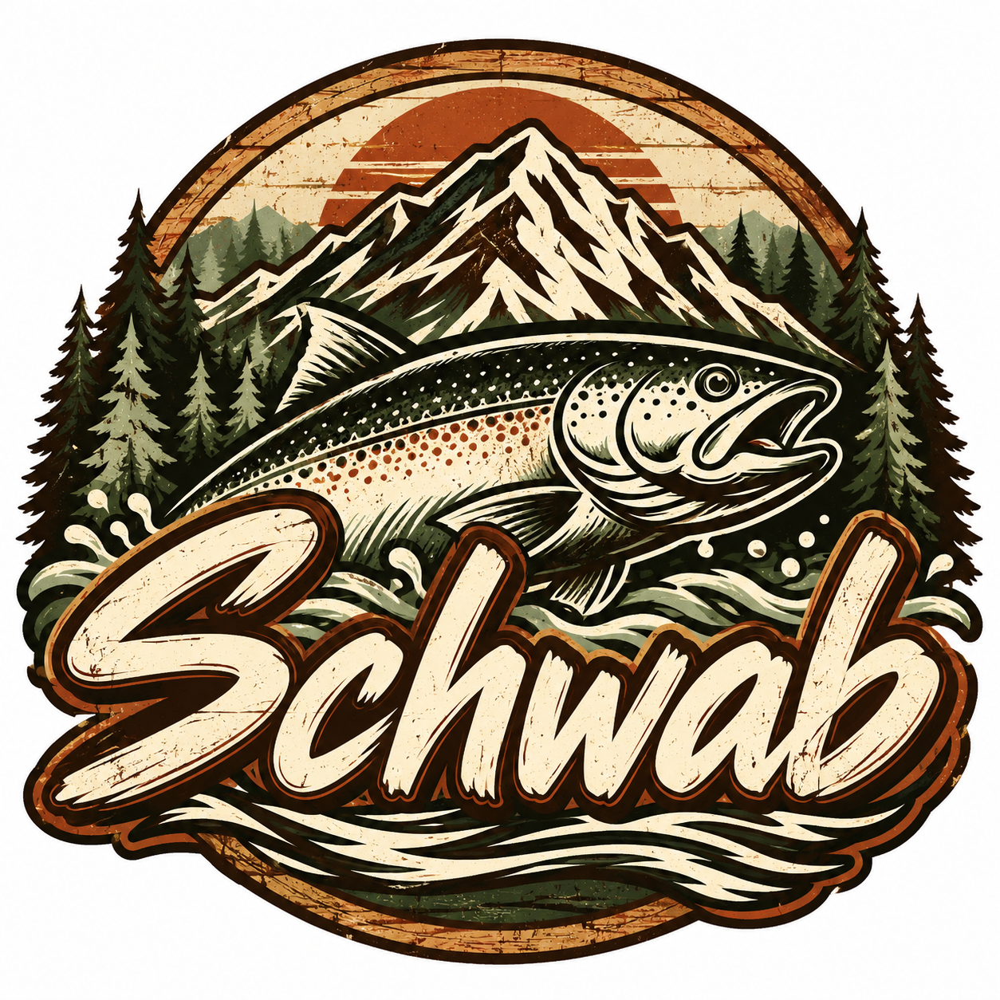

01 / THE COLLECTION
Schwab
Apparel.
Everyday comfort meets a love for the outdoors. Browse the actual apparel photos and reach out about what’s available.
Ask about apparel
APPAREL LOOKBOOK
On and off the water.
Photos supplied for this collection; no stock images.
INQUIRIES WELCOME
Like what you see?
Interested in a style or design? Tell Robert which photo you like and ask about size, color, customization and current availability. Items shown are examples, not confirmed inventory.
Ask about a design